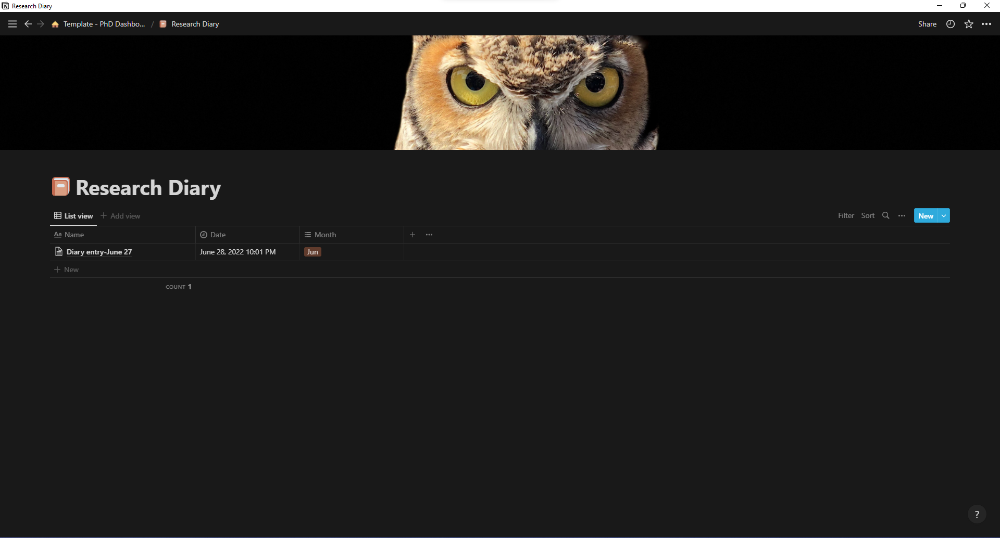
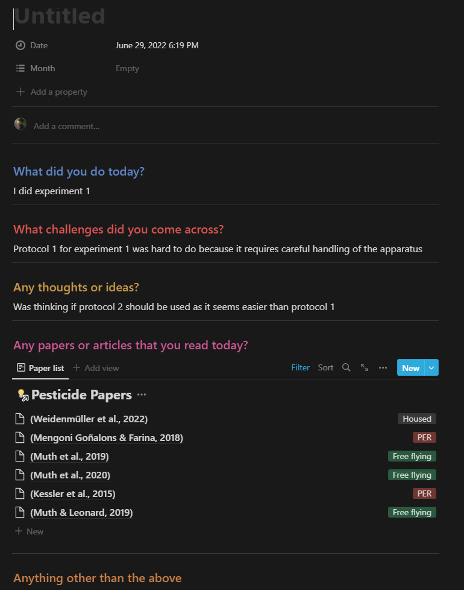

[1] "2022-07-03 10:28:17 IST"1 TL;DR
- Use Notion to write and maintain a research diary
- Duplicate the diary template and use it in Notion
2 Using notion to keep a research diary
In this article, we will see how we can use Notion to keep a research diary. If you are a researcher or a PhD student, then a research diary would be a very important piece of intellectual work that will be staying with you for quite a few years. So it must be well written, well-formatted and efficiently organised. With the power of Notion, I will show you a template that I made that can be used in Notion and can act as an electronic research diary.
You can get the template by clicking here. Duplicate it into your Notion workspace.

The picture above shows the research diary database. Each row value created in the table will be each day’s entry. If you also have a literature tracker database in Notion workspace, then you can couple it with your diary entry and it will showcase any papers that you have read one that day.
So let us try writing an entry. First, make a blank row entry and then hover over the newly created empty row and click ‘OPEN’. This will open a new window. In that window click on ‘Diary entry template’. This will bring you a sample template. You can fill in relevant info or add in your subsection and modify the entry.

There are mainly five sections in the template. In the first section, you can outline what experiments or analyses or any other related work you did on that day. You can also attach any relevant pictures if it helps.
In the second section, you can outline the challenges you came across while implementing your work. It can be problems you encountered in your experiment or a bug in your code while doing data analysis etc.
The third section outlines your thoughts and ideas, it can either be possible solutions that you want to try out with regards to the challenges you faced or a new research question that you had while reading a paper.
In the fourth section of the template, I have attached my literature tracker database to the diary entry page. Now if I happened to read any research articles on that day, then by filtering the database to the diary entry date, I can have all the papers that I read on that date show up. This can be pretty convenient to track your reading goals. You can extend this idea and showcase any experiments that you have done on that day if you have an experiment database in your Notion database.
The fifth and last section of the template can have any other relevant work information which does not fall into the earlier section. It can be purchase reminders, suggestions by your supervisors or colleagues, deadlines for meetings or presentations etc.
This is a simple research diary template that I have created and I hope you find it useful. Suggestions and feedback to improve the diary template are most welcome. Please comment your thoughts below the article. Thanks!
Video: Making a diary entry (click here)
Useful References
- The research diary image in the thumbnail for this post belongs to Dr. Julia Everitt (@juilaeverittdr). You can read more about research diary here.
Last updated on
Reuse
Citation
BibTeX citation:
@online{johnson2022,
author = {Jewel Johnson},
title = {Using {Notion} to Keep a Research Diary},
date = {2022-06-29},
url = {https://jeweljohnsonj.github.io/one-carat-blog//posts/notion_research_diary},
langid = {en}
}
For attribution, please cite this work as:
Jewel Johnson. 2022. “Using Notion to Keep a Research
Diary.” June 29, 2022. https://jeweljohnsonj.github.io/one-carat-blog//posts/notion_research_diary.